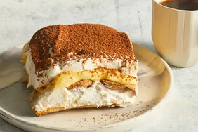

Homepage
Tiramisu

Description
Tiramisu is a classic Italian layered dessert with rum-flavored, coffee-soaked ladyfingers, a creamy mascarpone custard, and whipped cream. This tiramisu recipe is easy to make at home for an impressive no-bake dessert.
Tiramisu Ingredients
Egg Yolks: Egg yolks are essential for a thick, rich, velvety smooth filling. Though some traditional recipes use raw eggs, this one doesn't — raw eggs carry the risk of food-borne illness.
Sugar: White sugar is cooked with egg yolks and combined with mascarpone to create a sweet, creamy filling.
Milk: Whole milk slightly thins the thick filling, resulting in a spreadable texture.
Cream: Beat heavy cream until stiff peaks form to create an irresistible whipped cream.
Vanilla: Vanilla extract adds subtle flavor to the homemade whipped cream.
Mascarpone: Mascarpone, a creamy Italian cheese with a smooth texture and fresh taste, is a key ingredient in classic tiramisu.
Coffee: Ladyfingers are soaked in strong, spiked coffee — this is what gives tiramisu its signature flavor.
Rum: Rum is used to spike the coffee that will be drizzled over the ladyfingers. Some Allrecipes community members say they prefer Kahlua.
Ladyfingers: Ladyfingers are small sponge cakes that are shaped like thick fingers. If you can't find ladyfingers at your grocery store, you can use pound cake cut into strips.
Cocoa Powder: Finish off this decadent dessert with a generous dusting of cocoa powder.
How To Make Tiramisu
Make the Filling: Cook the egg yolks, sugar, and milk until slightly thickened. Let cool slightly, then chill in the fridge for about an hour. When the filling has fully chilled, mix in mascarpone cheese.
Make the Whipped Cream: Beat heavy cream with vanilla extract until stiff peaks form.
Soak the Ladyfingers: Combine coffee and rum in a small bowl. Pour mixture over ladyfingers that have been split in half lengthwise.
Assemble the Tiramisu: Line the bottom of a baking dish with soaked ladyfingers. Spread half of the mascarpone mixture over the ladyfingers, then half of the whipped cream over that. Repeat in the same order. Dust with cocoa powder.